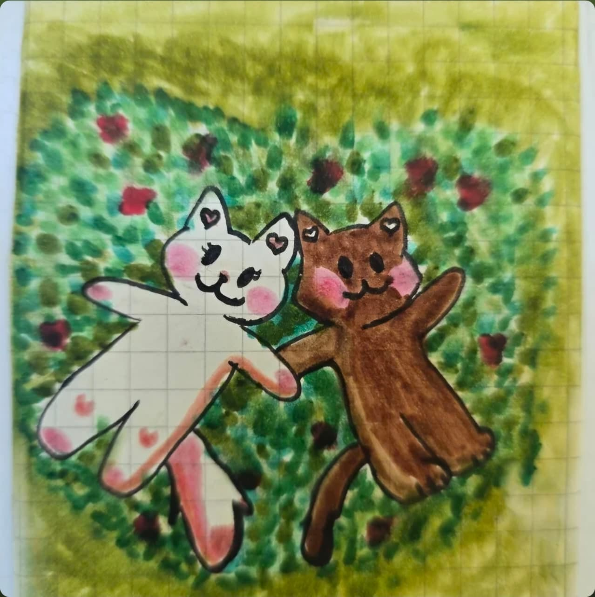

un pequeño espacio, hecho para ti
Todo lo bueno
me recuerda a ti
Baja despacio. Cada sección tiene algo especial para ti.
Para Itza
— con todo mi amor, de leito
03 — instantes
Galería
Cada foto cuando le picaas sale algo(Todos esos somo tu y yo obvio el mas oscurito jajaja).


04 — sin motivo aparente, con todos los motivos
Razones
Ciento cuatro razones, y ninguna es la última.
Su sonrisa ilumina mi día
Es muy inteligente
Es muy chistosa
Me hace sentir especial
Siempre está para mí
Es detallista
Su voz es hermosa
Su mirada me dejaa asi de que wow jaajjaa
Me inspira a ser mejor
Es muy tierna
Hace que todo sea más bonito
Me escucha con mucha atención
Sus abrazos son mágicos
Se preocupa por mí
Nos reímos por cualquier tontería
Siempre tiene algo lindo que decir
Sus mensajes me alegran el día
Tiene un corazón gigante
Es única y especial
Me acepta como soy
Me hace sentir amado
Su forma de hablar me encanta
Tiene unas ocurrencias jajaaja
Es creativa
Tiene un vibrante espíritu
Me hace sentir en tan en paz
Se ve hermosa sin esfuerzo
Me motiva sin querer hacerlo
Es sincera
Es fuerte y valiente
Siempre tiene una sonrisa lista
Me hace sentir paz
Es mi lugar feliz
La forma en que dice mi nombre
Tiene sueños grandes
Me comparte sus pensamientos
Siempre está aprendiendo
Es noble
Tiene una risa contagiosa
Es amorosa con los que quiere
Me hace sentir afortunado
Tiene estilo propio
Se ve hermosa en todos lados
Es paciente
Me cuida
Le gusta compartir lo que le gusta
Me entiende sin palabras, solo con ver mis caraas
Es honesta conmigo
Me hace reír cuando lo necesito
Hace que todo sea más divertido
Confía en mí, muchas veces mas de lo que yo lo hago
Es mi mejor compañía
Siempre tiene un consejo sabio
Es apasionada en lo que hace
Me hace sentir importante
Está llena de luz
Es respetuosa
Me enseña cosas nuevas
Es un rayo de sol en días nublados
Le brillan los ojitos cuando habla de lo que ama
Tiene buen gusto musical
Tiene un muy buenos gustos en todoo
Me hace sentir afortunado de tenerla
Me calma con solo mirarme
Su forma de amar es hermosa
Me hace soñar despierto
Es muy observadora
Me soporta jajajaja
Me hace sentir visto
Siempre encuentra lo bueno en todo
Le importan los detalles
Está llena de pasión por lo que se proponee(por eso es muuy buena en todo)
Me hace sentir valiente
Es dulce hasta cuando está enojada
No le da miedo ser ella misma
Tiene una energía que contagia
Es súper linda con los animales (más con los gatos)
Siempre sabe qué decir
Me sorprende todo el tiempo
Es mi lugar seguro
No necesito nada más cuando estoy con ella
Me hace sentir orgulloso
Me da ganas de abrazarla siempre
Me hace sentir cositas en mi panza jajaa
Me da paz con su voz
Su forma de ver el mundo
Cada que me pasa algo me dan muchas ganas de mandarle msj y decirlee
Es tan humana, tan real
Puede con todo
No se rinde fácil
Su cariño
Su forma de amar me inspira
Me trata con dulzura
Es alguien con quien puedo ser yo
Tiene esa chispa que no se apaga
Siempre me hace sentir especial
Le da sentido a mis días
Es mi mejor historia
Es mi motivación constante
Por ella creo en el amor
Me llena el corazón
Quiero compartir todo con ella
Es mi persona favorita
Es todo lo que está bien
05 — para escuchar mientras lees esto otra vez
Playlist
Algunas canciones que tee dedicoo y siempre que encuentro una laa metoo.
06 — Cosas que me recuerdan a ti
Cosas que me recuerdan a ti
07 — llevamos contando
Desde aquel día que empezamos a hablar
y contando, sin ninguna prisa por terminar 👻👻👻.
08 — un mapa
Lugares nuestros
El centro
El centro nunca falla jajaja, tantas veces que hemos ido y todas se me hacen tan especiales como la primera.
En el parquesitoo afuera del mb
El lugar donde siempree nos quedabamos de veer y yo te esperabaa con muchas ganas de vertee.
La plazaa a la que siempre ibamos
La plazaa para ir al cineee, para comer, para pasaar el ratoo o simplementee para estar juntitos.
09 — antes de cerrar esto
Gracias por ser
mi más grandee amor
Estoo fue un rato mío pensando en ti, convertido en algo que se puedas veer y conservar .